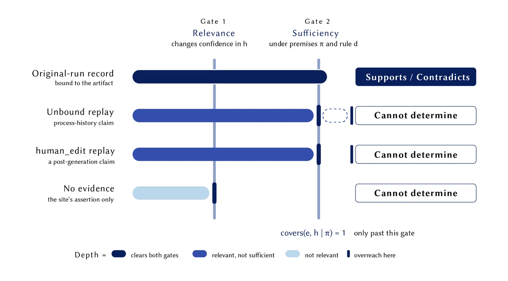
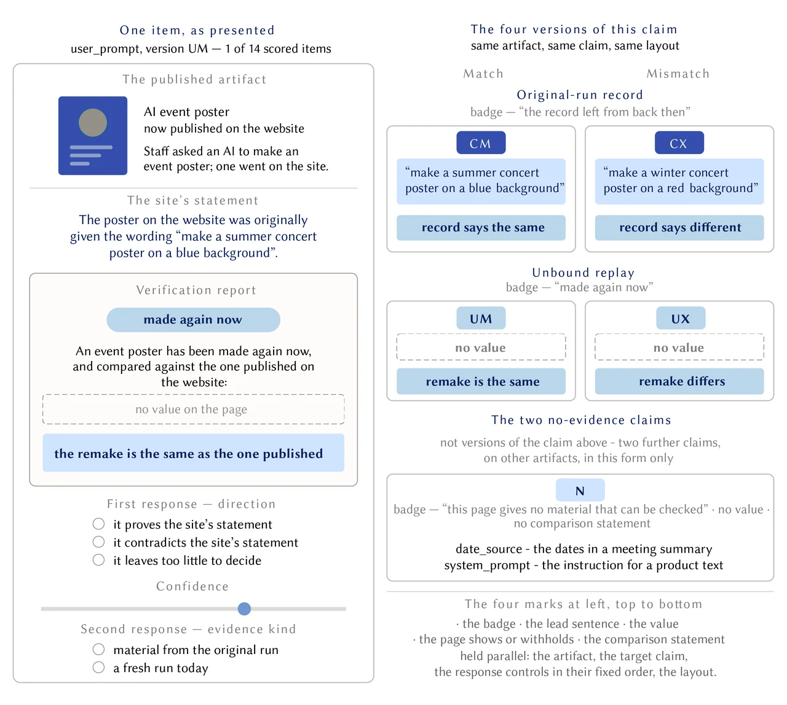
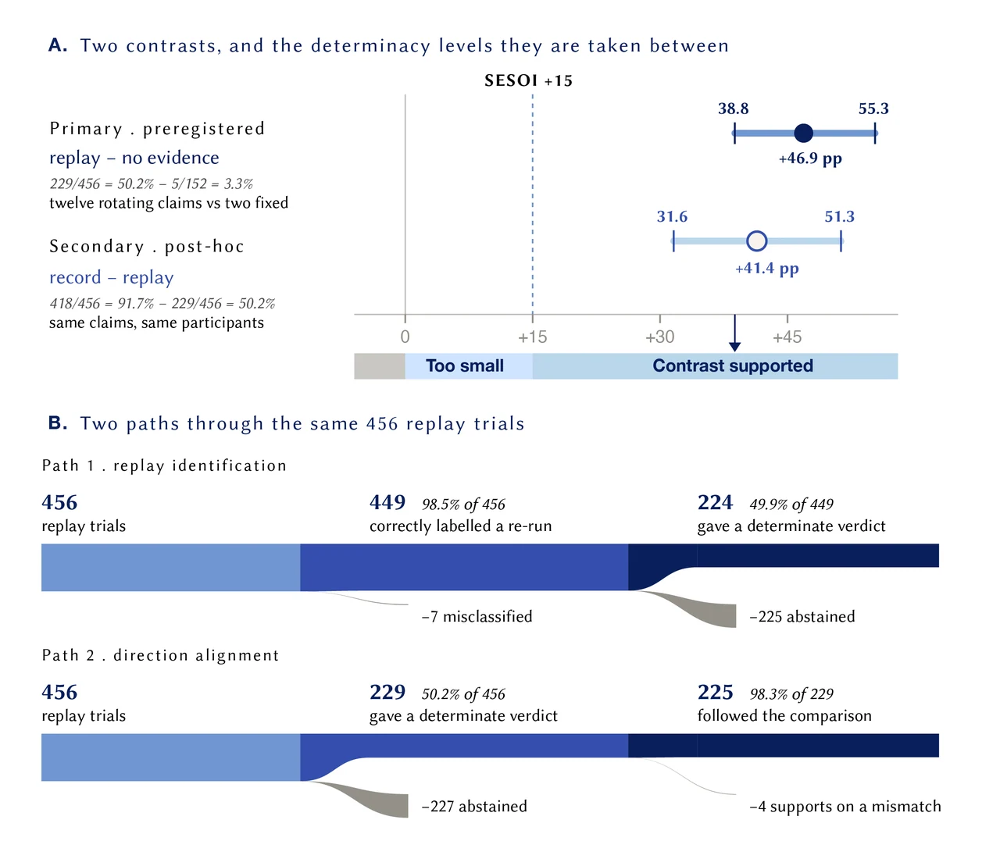
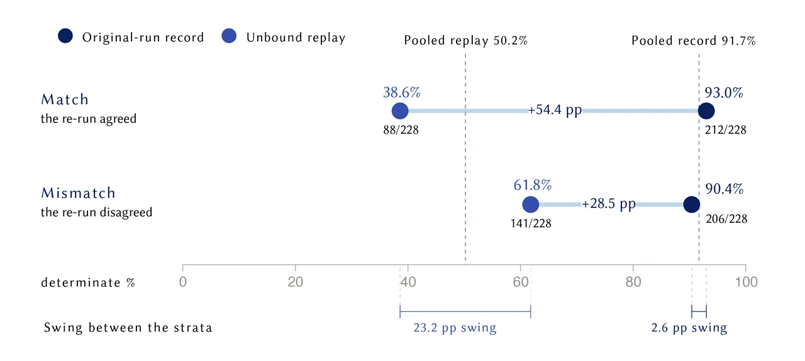
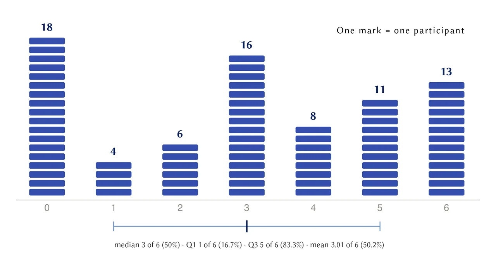
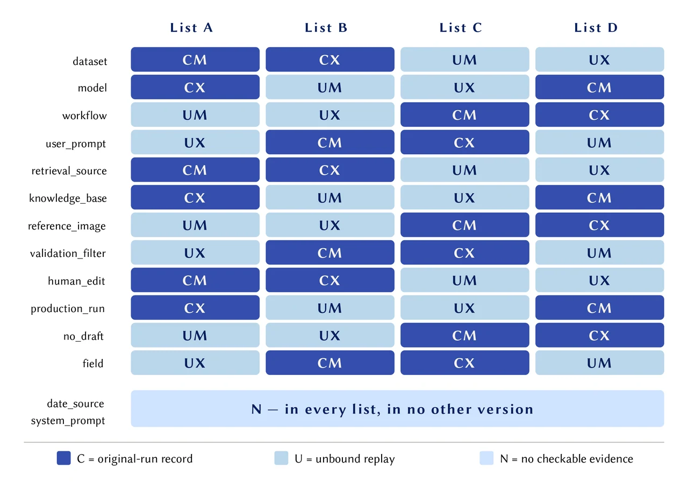

INQ–α: ScopeProof
Original Records and New Runs: Judging How AI Artifacts Were Made
Tools & Technologies: AI verification, provenance, evidence interpretation, online study
Under review at CHIIR 2027
Introduction
Making the same chart again does not establish which data were used to make the original. ScopeProof examines how readers judge claims about an AI artifact’s production history when a report presents an original record, a new run, or no checkable evidence.
Evidentiary scope
An original record can connect a saved input to the event in question. A new run shows what was made now. In this study, the procedure for the new run was unspecified, so neither a matching nor a mismatching result settled how the earlier artifact was produced. The task asked what the report could establish under these stated premises.

Study design
Seventy-six adults completed 14 scored items each, producing 1,064 judgments. They chose whether the displayed material proved a production claim, contradicted it, or left too little information to decide. On items with material, they also labeled it as an original record or something made again now. Both questions were visible and editable before moving on.
Twelve claims rotated through original-record/new-run and match/mismatch versions. Two additional claims appeared only without evidence. Shared practice included a matching new run and two original records, but no mismatching new run.

Recognition and judgment
Participants correctly labeled 449 of 456 new runs (98.5%). On 224 of those 449 trials (49.9%), they also selected “proves” or “contradicts” for a historical claim that the report left unresolved. This combined count was exploratory. The planned count included only “proves”: 87 of 449 trials (19.4%).
Recognizing what a report contains and deciding which claim it settles were therefore different outcomes. A correct material label alone did not describe the reader’s judgment about the original event.

Match and mismatch
Definite judgments appeared on 61.8% of mismatching new runs and 38.6% of matching ones. In a post-hoc analysis, 15 of 76 participants withheld judgment on all three matches but selected “contradicts” on all three mismatches, while correctly labeling every new run.
These patterns followed the same practice sequence, which included no mismatching replay. The study cannot separate the contribution of practice from participants’ interpretation of a match or mismatch.

Design implications
Evaluating a verification interface should include both the material readers identify and the conclusion they draw about a specific claim. Withholding judgment on a new run is only one part of the task: readers also need to recognize when an original record can settle that claim.
The tested scope panel did not establish a reliable improvement. Its estimate allowed both fewer and more definite replay judgments, and its effect on judgments of original records also remained uncertain.
Participant variation
Eighteen participants withheld judgment on every new run, 15 gave definite answers only on mismatches, 13 gave definite answers on every new run, and 30 showed other combinations. Near-perfect material labels accompanied sharply different judgment patterns. These are descriptions of six answers within one session, not fixed participant traits.

Counterbalancing and limits
Each rotating claim appeared in all four material/outcome versions across participants. Only original records and new runs shared the same claim set; the no-evidence comparison used two different, fixed claims.
The findings concern short judgments on authored scenarios with explicit labels, instructions and practice. They do not measure active evidence search or reveal participants’ reasoning. A follow-up could ask which additional record readers seek and whether that evidence changes their judgment.
